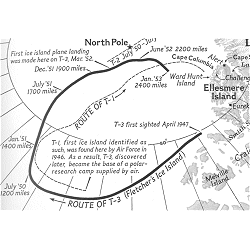

Clockwise circulation
above Ellesmere Island |
On his return journey, Cook said, he was unable to reach his outward
caches
because an unknown current drifted him far to the west.
Eventually
it became known that a westward flowing current does pass through the
area
that Cook would have traversed on his described return route. This has
been
advanced as positive evidence of the authenticity of his
narrative.
But he might have discovered it by a journey of less than 100 miles to
the
northwest, which is exactly the extent of his journey indicated in his
original
notebooks. (Peary’s protégé,
Donald MacMillan, on just
such a journey in 1914 noted a strong tide or current at the place he
turned
back.) Or it could have been just a lucky expedient, since Cook's story
made
it necessary that he be carried west to explain his inability to reach
Axel
Heiberg Land and his subsequent absence over the next winter.
|